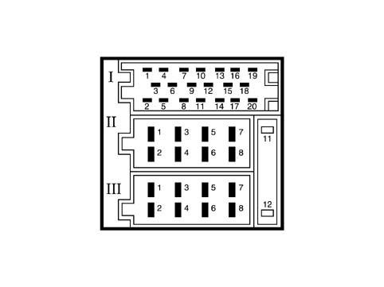
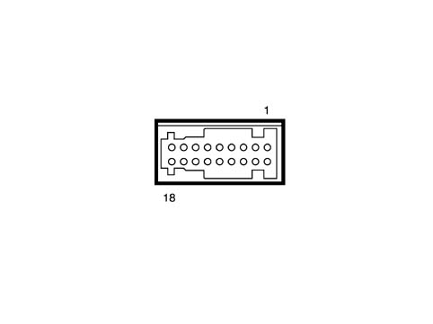
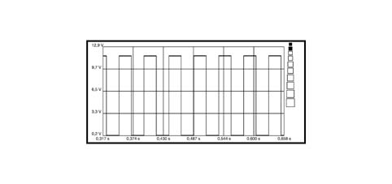

5580MH CHECK ON SPEED SIGNAL FROM INSTRUMENT PANEL TO MAP READER
- Path
- Test > 55 ELECTRICAL EQUIPMENT > 5580 SPECIAL ACCESSORIES > 5580M OM-BOARD NAVIGATOR > 5580MH CHECK ON SPEED SIGNAL FROM INSTRUMENT PANEL TO MAP READER
- Kind
- test / check procedure
- Applies to
- all engines; all production periods
- Interactive page
- https://sloeber94.github.io/elrnDB-fPnd/en/#/169001357
Applies to: all engines; all production periods
- Position the red probe of the voltmeter at pin 11 of the 18-way Connect connector and the negative to earth, [EL_3510]


Connect pin out
- Select a 20V end of scale and 1 second time base on the Examiner.
- Raise one of the front wheels and let it rotate at a speed of about 20 km/h.
- Press the Start button and display a square wave signal with a duty cycle of between 40 and 80%.
- To display the graph better, highlight several impulses using the zoom and check that the graph looks similar to the follow picture.

Speed signal
- If there is an interruption to the Connect speed signal, check the continuity of the signal from the ABS control unit to the Body and from the Body to the Connect.